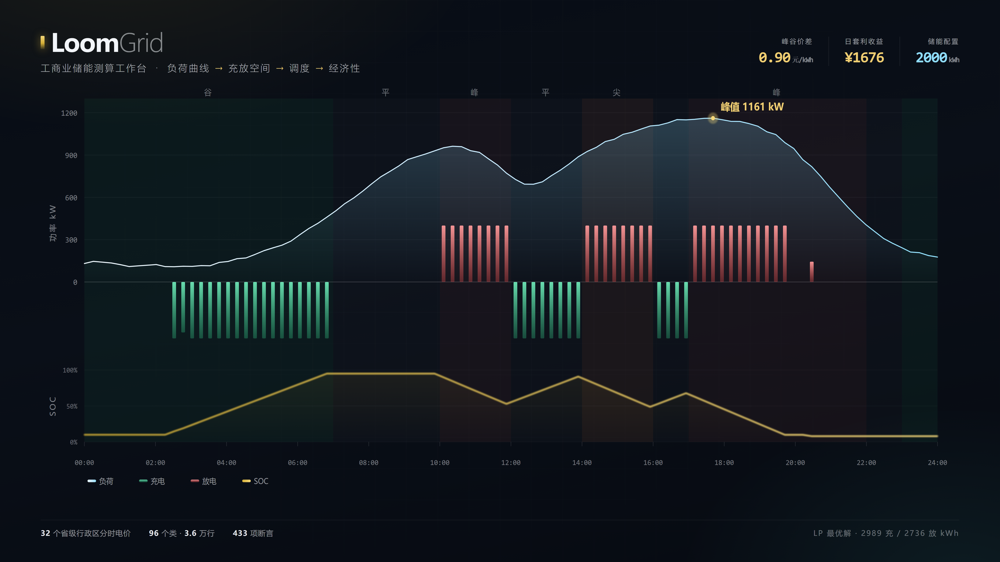
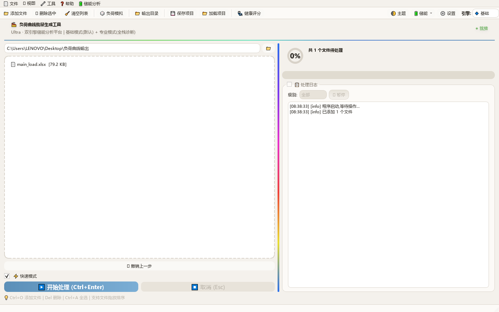
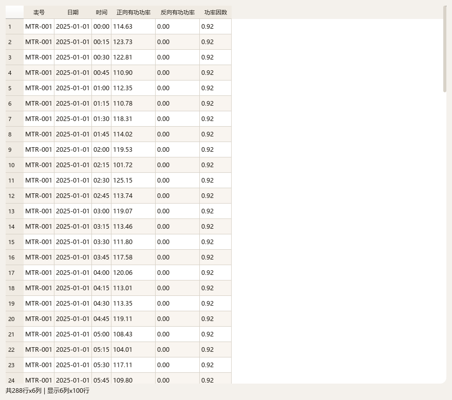
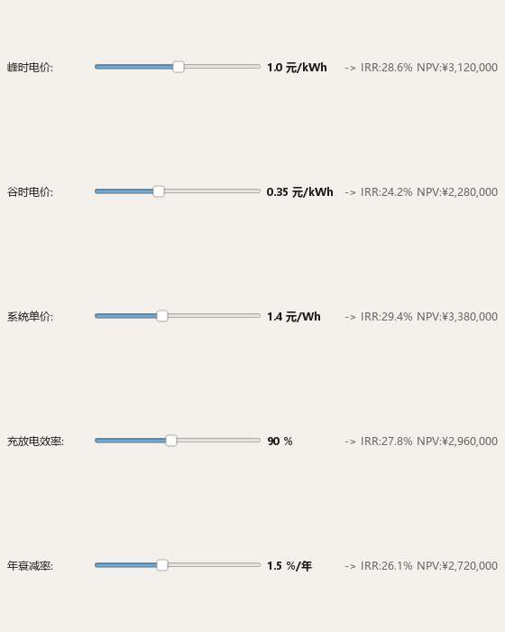
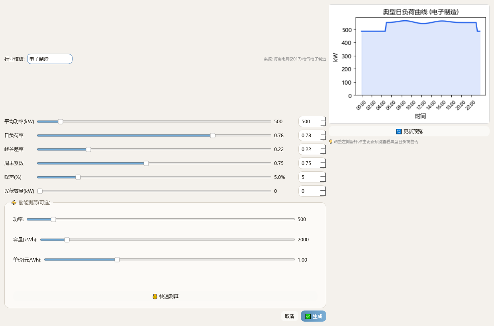
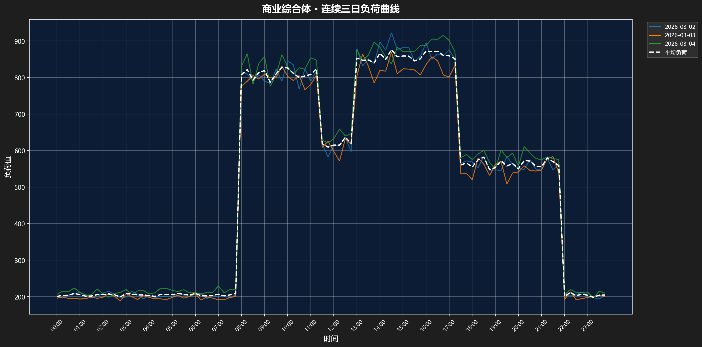
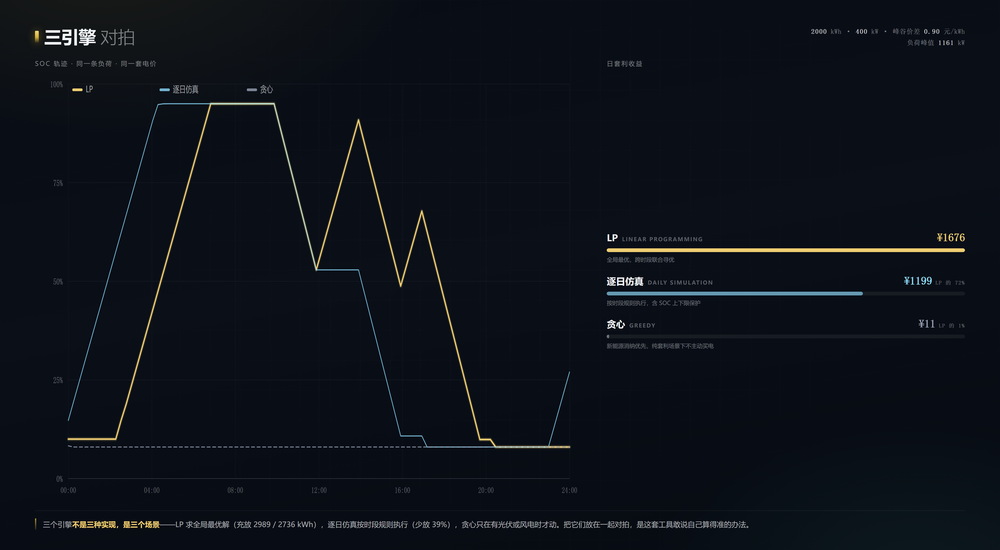
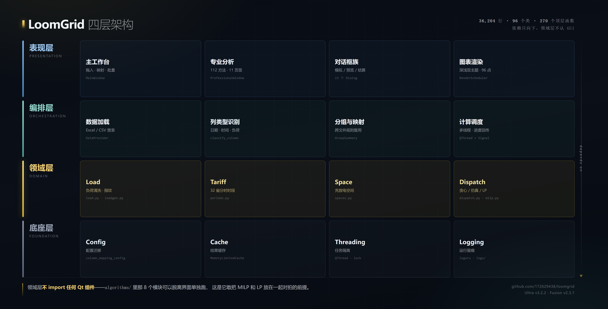

把一条负荷曲线，
织成一份能签的方案。
读进客户的电表数据和当地分时电价，算清楚装多大、怎么充放、几年回本。 曲线下面跑的是线性规划，不是经验系数表。

拉 8,760 行负荷、拆日期时间、查政策填时段、逐段列公式、试不同容量、手调图表颜色。 真正需要判断力的部分只占三成，剩下的七成是机械劳动——而机械劳动最容易出错。
这个工具只做一件事：把那七成接过去。
不需要先整理成模板。宽表、长表、正向有功示数表都能进—— 日期列、时间列、负荷列自动识别。认错了改一次，规则记住，下次不问。





不是实现优劣，是场景不同。同一组数据、同一个坐标系，才看得清该用哪个。

| 引擎 | 日收益 | 相对 LP |
|---|---|---|
| LPlinear programming · 跨时段全局最优 | ¥1,676 | 基准 |
| 逐日仿真daily simulation · 按时段规则推进 | ¥1,199 | 72% |
| 贪心greedy · 新能源消纳优先 | ¥11 | 1% |
贪心只省 11 元，不是它差——它的设计前提是有光伏或风电时自发自用， 纯套利场景下不会主动从电网买电充。用错场景，比用错算法更危险。
tools/demo_anim/compare_data.py
在 6×4×5 网格上真跑出来（120 格 × 3 引擎），前端只对价差做线性插值。
口径：基准购电成本 − 实际购电成本，含充放效率，逐点计价。
算法从界面里剥出来独立成包，import 进去就能跑，不依赖任何 GUI；
十六套验证脚本、四百多项断言守着每一次提交。
核心链路另有手算对拍：同一组数据用笔算一遍，和程序跑出来的结果比。 差一分钱就算失败。

四层架构 —— 依赖只向下，领域层不 import 任何 Qt 组件。这是算法能脱离界面单独跑的物理前提。
免安装压缩包，解压双击即用，不需要装 Python 或任何运行库。 日常算量用 Fusion，出正式方案用 Ultra。
轻量，批处理快。一整个文件夹的电表数据不卡，适合日常算量与消纳。
MILP 容量规划、LP 调度、Pareto 前沿、13 步诊断。要出一份能签的方案，用 Ultra。